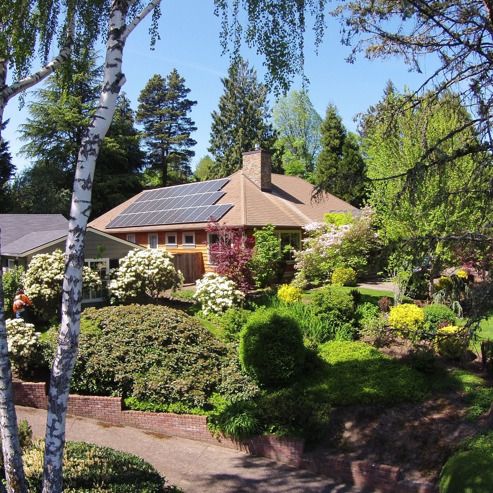

Instalación residencial
Sistemas conectados a la red para consumir tu propia energía e inyectar los excedentes. Relevamos el techo, proyectamos y dejamos todo funcionando.
- Sistemas desde 3 kWp
- Monitoreo desde el celular
- Trámite de usuario-generador incluido